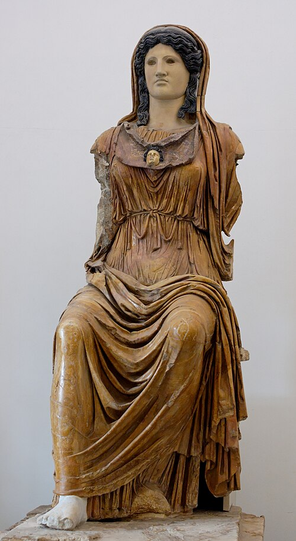
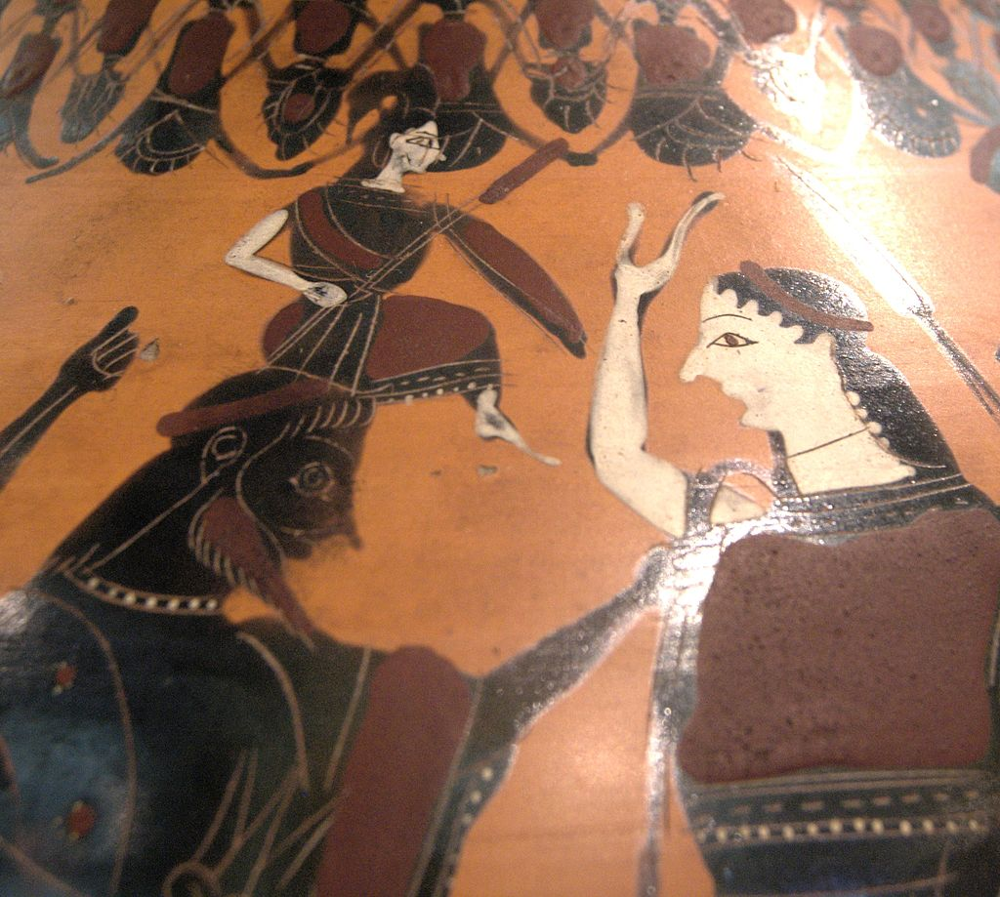

Афи́на (др.-греч. Ἀθηνᾶ или Ἀθηναία — Атхэнайа; микен. a-ta-na-po-ti-ni-ja: «Атана-владычица»), также Афина Паллада (Παλλὰς Ἀθηνᾶ) — в древнегреческой мифологии богиня мудрости, военной стратегии и тактики, одна из наиболее почитаемых богинь Древней Греции, входившая в число двенадцати великих олимпийских богов, эпоним города Афины. Кроме того, богиня знаний, искусств и ремёсел; дева-воительница, покровительница городов и государств, наук и мастерства, ума, сноровки, изобретательности. Афина легко отличима от других древнегреческих богинь благодаря своей необычной внешности. В отличие от других женских божеств, она использует мужские атрибуты — одета в доспехи, держит в руках копьё; её также сопровождают священные животные. Её называли «сероокой и русоволосой», у Гомера эпитет γλαυκῶπις («глаукопис», совоокая). Описания подчёркивают её большие глаза. Гомер описывает подготовку Афины к бою: её доспехи, эгиду, шлем, копьё и колесницу. Вергилий упоминает, как циклопы в кузне Вулкана лощили доспехи и эгиду Паллады, на них чешуя змей и голова Горгоны.

Культовая статуя Афины (конец I века до н. э. — начало I века н. э.).
Как и положено в мифах, рождение богини Афины было необычным. Наиболее распространённая версия рассказана в «Теогонии» Гесиода: царь богов Зевс по совету Урана и Геи проглотил свою первую жену Метиду-Премудрость, когда та забеременела, чтобы предотвратить рождение ею после Афины сына, который свергнул бы Зевса. После этого он породил воительницу Афину-Тритогенею из своей головы. Поэмы Гомера миф о рождении Афины игнорируют, а последующие авторы дополняют рассказ деталями и локализуют его. Краткие упоминания встречаются в гомеровском гимне к Аполлону Пифийскому, у Ивика и других поэтов, писателей и мифографов. При этом Метиду источники почти не упоминают, а у Эсхила Афина подчёркивает, что родилась без матери. Эти детали таковы: предсказание Зевсу изрекли мойры либо сама Метида. Проглотив беременную Метиду, Зевс через некоторое время почувствовал страшную головную боль. Чтобы помочь рождению Афины, Гефест ударил Зевса топором по голове, а Прометей воспринял её из головы Зевса (по поздней версии, она родилась из бороды Зевса). Стесихор впервые упоминает, что Афина явилась из головы Зевса в полном боевом вооружении (паноплии). О доспехах говорится также в XXVIII гомеровском гимне и у орфиков. По Ликофрону, Афина родилась у Зевса на третий день. Согласно Пиндару, когда родилась Афина, на Родосе пошёл золотой дождь. Кроме того, приводится и другое толкование её рождения: согласно некоему Аристоклу, Афина была скрыта в облаке и появилась из него благодаря удару молнии Зевса, произошло же это на Крите. В этом мифе «отразилось представление о рождении молнии и грома из тяжело нависшей грозовой тучи» (В. Г. Борухович).

Рождение Афины из головы Зевса. Рисунок с чернофигурной древнегреческой вазы.